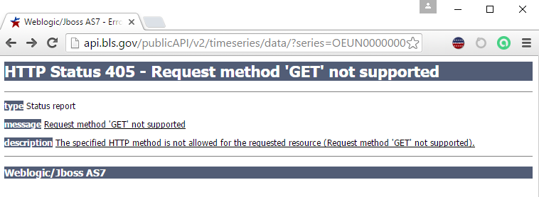

Parameters in the BLS API include the JSON fields we just discussed on the multiple series page (calculations, annual average, and catalog information). To use these parameters, you must send a POST request, include a registration key (as the parameters are the version 2.0 expansions), and include the parameters in the signature or the JSON object when you open the request. A request with parameters can include one or multiple series IDs, but again, must be sent as POST even with only one series ID. Below is an example of the response you will get if you attempt to send a request with parameters as a get request:
Below is some example code, adapting the multiple series example from the previous page to use parameters with a single series:
var myRequest = '{"seriesid":["OEUN000000054192027402104"], ' +
' "startyear":"2000", ' +
' "endyear":"2010", ' +
' "catalog":true, ' +
' "calculations":false, ' +
' "annualaverage":false, ' +
' "registrationKey":"f6be152aed67442d986955e52e5419d0" }';
var baseURL = 'http://api.bls.gov/publicAPI/v2/timeseries/data/';
var req = new XMLHttpRequest();
req.open("POST", baseURL, false);
req.setRequestHeader('Content-Type', 'application/json');
req.send(myRequest);
var results = JSON.parse(req.responseText);